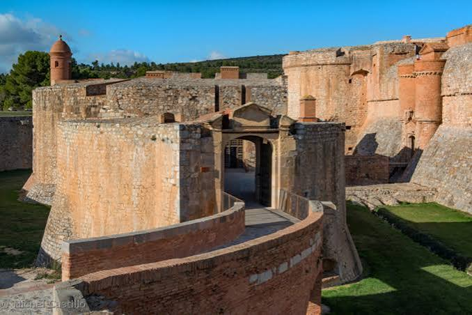

Forteresse
de Salses


⟹ Châteaux & Forteresses ⟸
La forteresse de Salses est née d’une frontière. À la fin du XVe siècle, le « pas de Salses », étroit corridor entre les Corbières et l’étang de Salses-Leucate, commande la grande voie terrestre reliant le Languedoc au Roussillon et à la Catalogne. Après les guerres qui opposent la France et les souverains hispaniques, l’ancien château de Salses apparaît incapable de résister à l’artillerie. Sa destruction lors de l’offensive française de 1496 convainc les Rois Catholiques de créer une place entièrement nouvelle, capable de barrer durablement l’accès au royaume.

Le chantier est confié à Francisco Ramiro López, officier et ingénieur maîtrisant l’artillerie et la poliorcétique, c’est-à-dire l’art d’attaquer et de défendre les places fortes. Les travaux commencent en 1497 et se poursuivent jusqu’en 1503. Le choix du terrain est stratégique : la forteresse est en partie enfouie, protégée par la topographie et implantée à proximité de sources, ressource capitale en cas de siège. Son plan, ses murs extrêmement épais, ses tours, ses fossés et ses dispositifs de tir forment une architecture de transition entre le château fort médiéval et la fortification bastionnée de l’époque moderne.
Salses est conçue comme une véritable machine de guerre autonome. Elle doit abriter une importante garnison, plusieurs centaines de cavaliers, des réserves, des écuries, des magasins, des citernes et une artillerie nombreuse. L’objectif fixé par les concepteurs est de pouvoir tenir plusieurs semaines en attendant une armée de secours. Les circulations intérieures, les galeries, les cours et les positions de tir répondent à cette logique : protéger les hommes, déplacer rapidement les défenseurs et opposer à l’assaillant une succession d’obstacles.
À peine achevée, la forteresse subit l’épreuve du feu. En 1503, les Français l’assiègent mais échouent à s’en emparer. L’expérience du siège conduit à poursuivre l’adaptation de certaines défenses. Salses devient ensuite, pendant plus d’un siècle, la sentinelle avancée de la monarchie espagnole face à la France. Sa masse basse et compacte illustre une période d’expérimentation militaire où l’on cherche encore la meilleure réponse à la puissance croissante des canons.
La guerre de Trente Ans et le conflit franco-espagnol ramènent brutalement la forteresse au premier plan. En 1639, les Français l’assiègent et s’en emparent. Les Espagnols la reprennent en 1640 après un nouveau siège. En 1642, la chute de Perpignan bouleverse l’équilibre régional ; peu après, Salses est de nouveau assiégée et passe définitivement sous contrôle français. En quelques années, la place change donc plusieurs fois de mains, preuve de la valeur stratégique que les deux monarchies lui accordent encore.
Le traité des Pyrénées de 1659 transforme pourtant sa situation. La frontière entre les royaumes de France et d’Espagne est repoussée vers le sud, sur la chaîne pyrénéenne : Salses, désormais en arrière de la nouvelle ligne, perd la fonction pour laquelle elle avait été construite. Sa destruction est envisagée, mais la forteresse survit. Vauban l’inspecte et des travaux de restauration et d’adaptation sont entrepris à partir de 1691, sans pour autant lui rendre son rôle de verrou frontalier majeur.
Aux XVIIe et XVIIIe siècles, la forteresse connaît de nouveaux usages. Elle sert notamment de prison d’État et accueille des détenus liés à de grandes affaires du règne de Louis XIV, avant d’être utilisée plus tard comme dépôt et magasin militaire. Au XIXe siècle, alors que sa valeur opérationnelle a disparu, son intérêt architectural et historique commence à être reconnu. Elle est classée monument historique en 1886, ce qui contribue à préserver un ensemble militaire resté exceptionnellement lisible.
Salses est aujourd’hui considérée comme l’un des exemples majeurs de l’architecture militaire européenne autour de 1500. Son intérêt vient précisément de son caractère intermédiaire : elle conserve des traits du château fort — tours, donjon, organisation fermée — tout en intégrant les contraintes imposées par les armes à feu. Gérée par le Centre des monuments nationaux, elle permet de comprendre concrètement le basculement entre la guerre médiévale et la guerre moderne, mais aussi plusieurs siècles de rivalité entre France, Aragon puis monarchie espagnole autour de la frontière du Roussillon.
Réputée quasiment imprenable en raison de la puissance de ses murailles, la forteresse de Salses a longtemps incarné, dans l'imaginaire local, la sentinelle ultime avant la Catalogne — un véritable « verrou » entre deux royaumes rivaux.
Une machine de guerre enfouie dans la plaine, tournée vers la France, bâtie pour tenir un siège jusqu'à l'arrivée des renforts.
— Tradition militaire catalaneSous Louis XIV, ses cachots accueillent certains condamnés de la célèbre affaire des poisons, un épisode qui a nourri, au fil des siècles, bien des récits autour des geôles profondes de la forteresse.
L'étang de Salses-Leucate tout proche, paradis des amateurs d'ornithologie et de sports nautiques.
Le massif des Corbières et ses routes des vins, à quelques minutes de la forteresse.
Le village de Salses-le-Château blotti au pied des remparts, avec ses ruelles catalanes.
La via Domitia dont le tracé antique longeait autrefois ce même passage stratégique.